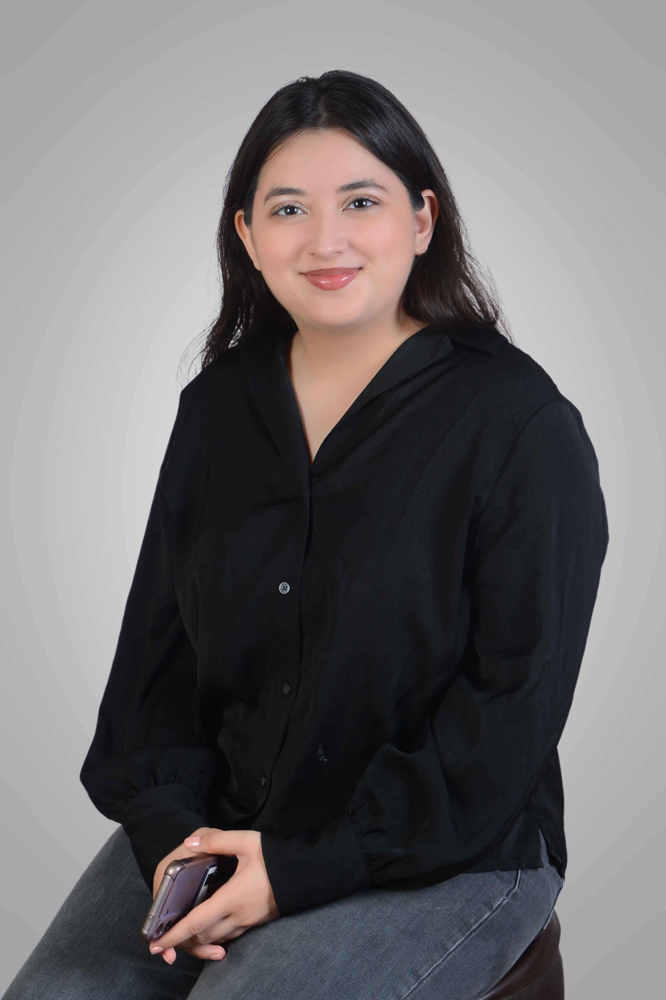

Bio
Hi there — I'm Zarah, a brand and product designer passionate about building inclusive, human-centered work. Originally from Karachi, Pakistan, I now call New York City home.
My practice spans branding, product design, and visual systems — from identity and packaging to interfaces and digital experiences. I'm drawn to work that sits at the intersection of culture, accessibility, and craft, and I care deeply about designing for people who are often left out of the conversation.
I recently completed my MPS Communication Design degree from The Parsons School of Design (Class of 2026), building on a BA (Hons) in Communication & Design from Habib University (Class of 2025). Recent recognition includes first place at the Designpreneurs Hackathon 2026 and participation in FigBuild 2026.
Outside of design you can find me pop-up hopping across New York, crafting or curled up on my couch binging TV shows.
My email is zarahyaqubdesign@gmail.com if you want to work together, say hey, or just talk design!
